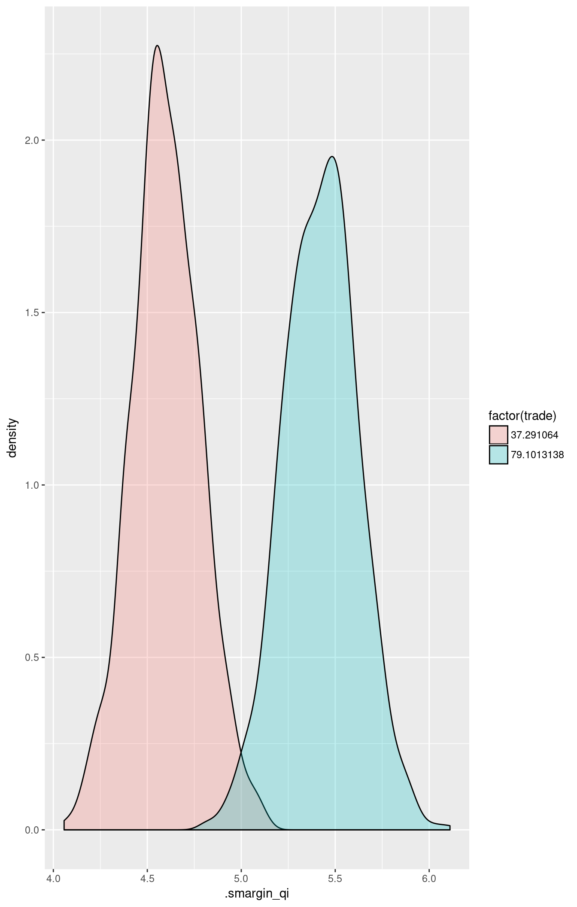
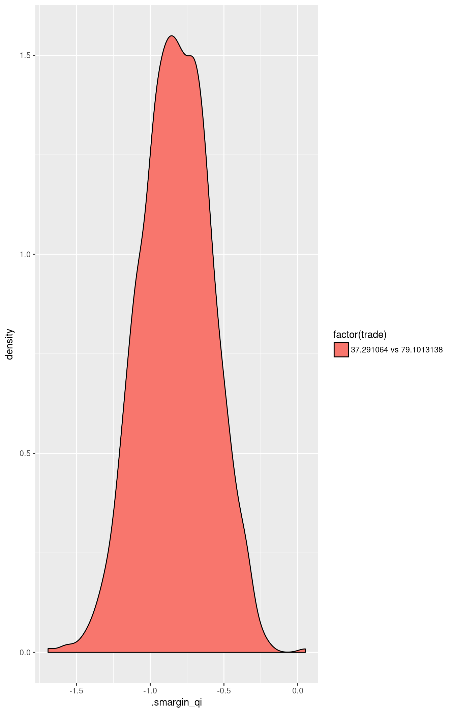
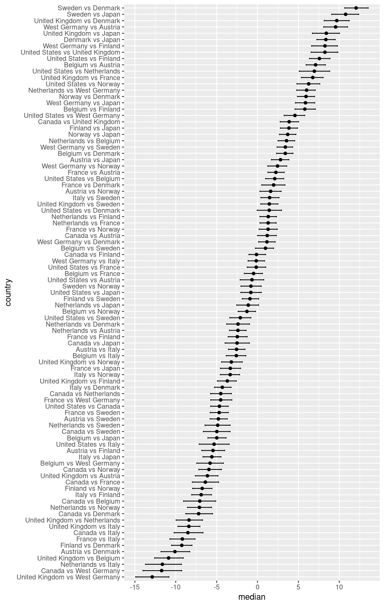

Load Zelig and attach example data frame:
data(macro, package = "Zelig")Estimate model:
m1 <- lm(unem ~ gdp + capmob + trade, data = macro)Summarize regression coefficients:
summary(m1)##
## Call:
## lm(formula = unem ~ gdp + capmob + trade, data = macro)
##
## Residuals:
## Min 1Q Median 3Q Max
## -5.3008 -2.0768 -0.3187 1.9789 7.7715
##
## Coefficients:
## Estimate Std. Error t value Pr(>|t|)
## (Intercept) 6.181294 0.450572 13.719 < 2e-16 ***
## gdp -0.323601 0.062820 -5.151 4.36e-07 ***
## capmob 1.421939 0.166443 8.543 4.22e-16 ***
## trade 0.019854 0.005606 3.542 0.000452 ***
## ---
## Signif. codes: 0 '***' 0.001 '**' 0.01 '*' 0.05 '.' 0.1 ' ' 1
##
## Residual standard error: 2.746 on 346 degrees of freedom
## Multiple R-squared: 0.2878, Adjusted R-squared: 0.2817
## F-statistic: 46.61 on 3 and 346 DF, p-value: < 2.2e-16Set explanatory variables to their default (mean/mode) values, with high (80th percentile) and low (20th percentile) values for the trade variable:
library(smargins)
summary(m1.sm)## trade mean sd median lower_2.5 upper_97.5
## 1 37.29106 4.599472 0.1815562 4.592286 4.228733 4.964415
## 2 79.10131 5.424319 0.1967924 5.429724 5.026182 5.814051Calculate first differences for the effect of high versus low trade on GDP:
## trade mean sd median lower_2.5
## 1 37.291064 vs 79.1013138 -0.8248465 0.237545 -0.8237525 -1.280352
## upper_97.5
## 1 -0.3609687Plot the simulated distributions:
library(ggplot2)


Estimate a model with fixed effects for each country.
m2 <- lm(unem ~ gdp + trade + capmob + country, data = macro)Calculate AMEs for each country.
summary(m2.sm)## country mean sd median lower_2.5 upper_97.5
## 1 United States 6.7680692 0.5007948 6.7709489 5.8329233 7.7490414
## 2 Canada 6.1016109 0.4972165 6.0970855 5.1180524 7.0785637
## 3 United Kingdom -0.2926164 0.6609065 -0.3017672 -1.5481528 1.0393800
## 4 Netherlands 11.4001326 0.6659644 11.3785184 10.0326264 12.7282923
## 5 Belgium -1.4806254 0.5130657 -1.4630916 -2.4888853 -0.5040113
## 6 France 8.2145382 0.4141495 8.2113189 7.3892860 8.9722976
## 7 West Germany -0.1741963 0.5789241 -0.1847705 -1.3244135 1.0007353
## 8 Austria 4.6700490 0.4041037 4.6651446 3.9201940 5.5077410
## 9 Italy 5.6184358 0.3744296 5.6370479 4.9088168 6.3626650
## 10 Finland 6.9114170 0.3796487 6.9028008 6.1555266 7.6392674
## 11 Sweden 2.2241739 0.3856131 2.2136886 1.5043832 2.9789643
## 12 Norway 8.0676231 0.4121988 8.0712295 7.2521885 8.8544483
## 13 Denmark 1.3208342 0.3865232 1.3212407 0.5693699 2.0887963
## 14 Japan 10.6010735 0.4045328 10.5957003 9.8065191 11.3975887## country mean sd median
## 1 United States vs Canada -4.6320634 0.5582194 -4.6516976
## 2 United States vs United Kingdom 8.2486946 0.8672670 8.2458767
## 3 United States vs Netherlands 6.9422655 0.9492501 6.9509578
## 4 United States vs Belgium 2.0980202 0.5762177 2.1068538
## 5 United States vs France -0.1433478 0.5806986 -0.1513707
## 6 United States vs West Germany 4.5438953 0.6566886 4.5786777
## 7 United States vs Austria -0.6664583 0.7560766 -0.6770127
## 8 United States vs Italy -5.2985217 0.9341729 -5.3134438
## 9 United States vs Finland 7.5822363 0.6371227 7.5657195
## 10 United States vs Sweden -2.1129273 0.6774687 -2.1037967
## 11 United States vs Norway 6.2758072 0.7399784 6.2590053
## 12 United States vs Denmark 1.4315619 0.7365780 1.4351547
## 13 United States vs Japan -0.8098061 0.6449306 -0.8166520
## 14 Canada vs United Kingdom 3.8774370 0.5675488 3.8701010
## 15 Canada vs Netherlands -4.4994626 0.6477124 -4.4934804
## 16 Canada vs Belgium -7.0606856 1.0201063 -7.0624689
## 17 Canada vs France -6.3942273 0.8283087 -6.3777680
## 18 Canada vs West Germany -11.6927491 1.2033494 -11.7271027
## 19 Canada vs Austria 1.1880090 0.5747037 1.1917680
## 20 Canada vs Italy -8.5071547 0.9091589 -8.5171338
## 21 Canada vs Finland -0.1184202 0.5143380 -0.1275542
## 22 Canada vs Sweden -4.9626655 0.8285105 -4.9733893
## 23 Canada vs Norway -5.9110522 0.7103924 -5.9439712
## 24 Canada vs Denmark -7.2040334 0.8349913 -7.2010091
## 25 Canada vs Japan -2.5167903 0.7756240 -2.4987166
## 26 United Kingdom vs Netherlands -8.3602396 0.8619403 -8.3775858
## 27 United Kingdom vs Belgium -10.8936899 0.8910620 -10.8713437
## 28 United Kingdom vs France 6.7300836 0.6533672 6.7615655
## 29 United Kingdom vs West Germany -12.8807581 1.0476349 -12.8766763
## 30 United Kingdom vs Austria -6.1506745 0.7321198 -6.1283962
## 31 United Kingdom vs Italy -8.3920424 0.6901635 -8.3954744
## 32 United Kingdom vs Finland -3.7047993 0.6305874 -3.6908291
## 33 United Kingdom vs Sweden 1.4464690 0.5253811 1.4434459
## 34 United Kingdom vs Norway -3.1855944 0.6138226 -3.1987645
## 35 United Kingdom vs Denmark 9.6951637 0.7779899 9.6960098
## 36 United Kingdom vs Japan 8.3887345 0.8319440 8.4150147
## 37 Netherlands vs Belgium 3.5444892 0.5248938 3.5476174
## 38 Netherlands vs France 1.3031212 0.5120252 1.3019813
## 39 Netherlands vs West Germany 5.9903644 0.5830709 6.0064561
## 40 Netherlands vs Austria -2.3865353 0.5113405 -2.3936457
## 41 Netherlands vs Italy -11.5743289 1.1188867 -11.6314225
## 42 Netherlands vs Finland 1.3064292 0.5269909 1.3182091
## 43 Netherlands vs Sweden -4.8442453 0.7640414 -4.8692905
## 44 Netherlands vs Norway -7.0856133 0.7481541 -7.1032311
## 45 Netherlands vs Denmark -2.3983701 0.7040279 -2.3846695
## 46 Netherlands vs Japan -1.1496334 0.6832677 -1.1270475
## 47 Belgium vs France -0.4831751 0.5657514 -0.4822218
## 48 Belgium vs West Germany -5.7816969 0.8303244 -5.8017942
## 49 Belgium vs Austria 7.0990612 0.5781720 7.1019633
## 50 Belgium vs Italy -2.5961025 0.6002975 -2.5900571
## 51 Belgium vs Finland 5.7926320 0.6397954 5.7880691
## 52 Belgium vs Sweden 0.9483867 0.5705290 0.9752087
## 53 Belgium vs Norway -1.2929812 0.5468583 -1.2904269
## 54 Belgium vs Denmark 3.3942619 0.5177507 3.4003210
## 55 Belgium vs Japan -4.9826377 0.5794562 -4.9767439
## 56 France vs West Germany -4.4887156 0.6804797 -4.5023744
## 57 France vs Austria 2.2413680 0.5161479 2.2459187
## 58 France vs Italy -9.1759588 0.7950177 -9.1901186
## 59 France vs Finland -2.4458751 0.5917827 -2.4663542
## 60 France vs Sweden -4.6872431 0.5517468 -4.6866801
## 61 France vs Norway 1.2995539 0.5525693 1.2980312
## 62 France vs Denmark 1.9660122 0.7327026 1.9712338
## 63 France vs Japan -3.3325095 0.6331613 -3.3283767
## 64 West Germany vs Austria 9.5482486 0.7396749 9.5531194
## 65 West Germany vs Italy -0.1469151 0.5143240 -0.1486431
## 66 West Germany vs Finland 8.2418194 0.7925789 8.2527301
## 67 West Germany vs Sweden 3.3975741 0.4969776 3.4049108
## 68 West Germany vs Norway 2.4491874 0.6042833 2.4497488
## 69 West Germany vs Denmark 1.1562061 0.5255047 1.1560102
## 70 West Germany vs Japan 5.8434493 0.6096718 5.8671089
## 71 Austria vs Italy -2.5334504 0.5414823 -2.5579729
## 72 Austria vs Finland -5.4472350 0.7190349 -5.4471003
## 73 Austria vs Sweden -4.7807767 0.5606882 -4.7885979
## 74 Austria vs Norway 1.6134506 0.6510933 1.6044301
## 75 Austria vs Denmark -10.0792984 0.8796551 -10.0952622
## 76 Austria vs Japan 2.8014596 0.5381827 2.8156370
## 77 Italy vs Finland -6.8937040 0.6162619 -6.8907357
## 78 Italy vs Sweden 1.4950305 0.5674566 1.4758318
## 79 Italy vs Norway -3.3492148 0.6116030 -3.3417940
## 80 Italy vs Denmark -4.2976016 0.5134278 -4.3014928
## 81 Italy vs Japan -5.5905828 0.5694168 -5.5864355
## 82 Finland vs Sweden -0.9033397 0.5334267 -0.9224847
## 83 Finland vs Norway -6.7467889 0.6134397 -6.7650399
## 84 Finland vs Denmark -9.2802393 0.6129493 -9.2616772
## 85 Finland vs Japan 3.8330043 0.5551443 3.8434278
## 86 Sweden vs Norway -0.7990591 0.6391212 -0.8051706
## 87 Sweden vs Denmark 12.0816989 0.7440566 12.0567065
## 88 Sweden vs Japan 10.7752698 0.8247239 10.7778826
## 89 Norway vs Denmark 5.9310245 0.5512046 5.9351540
## 90 Norway vs Japan 3.6896565 0.5091614 3.6916425
## 91 Denmark vs Japan 8.3768996 0.5572685 8.3584573
## lower_2.5 upper_97.5
## 1 -5.739407577 -3.5828855
## 2 6.553104770 9.8259707
## 3 5.104798468 8.8253231
## 4 0.982259361 3.2179131
## 5 -1.257038151 1.0020580
## 6 3.254584390 5.7703627
## 7 -2.124958955 0.7748461
## 8 -7.129818926 -3.4731140
## 9 6.359379594 8.8682010
## 10 -3.395391491 -0.8091140
## 11 4.825977175 7.6186192
## 12 -0.036356099 2.9358391
## 13 -2.037216821 0.4629273
## 14 2.768725335 5.0244506
## 15 -5.748695332 -3.1968714
## 16 -9.042462285 -5.1016677
## 17 -7.976826973 -4.7639800
## 18 -14.013463192 -9.2687790
## 19 0.009510328 2.2962933
## 20 -10.196703287 -6.6672048
## 21 -1.048355473 0.9872655
## 22 -6.621892679 -3.3618128
## 23 -7.181413523 -4.4084940
## 24 -8.770926494 -5.5016137
## 25 -3.967868189 -0.9888331
## 26 -9.959247016 -6.7214568
## 27 -12.586548871 -9.0744297
## 28 5.368394744 8.0268169
## 29 -14.893379262 -10.8333477
## 30 -7.595432041 -4.8360455
## 31 -9.726493542 -7.0395848
## 32 -4.904504244 -2.5840215
## 33 0.400031071 2.5020238
## 34 -4.395591739 -1.8622571
## 35 8.152892706 11.2173081
## 36 6.718238354 10.0294372
## 37 2.513203835 4.5447054
## 38 0.292043887 2.2890067
## 39 4.791721475 7.0602581
## 40 -3.434008646 -1.3884075
## 41 -13.690870782 -9.3086343
## 42 0.294859378 2.3236507
## 43 -6.426104309 -3.3524952
## 44 -8.556228613 -5.6155274
## 45 -3.769410536 -0.9792127
## 46 -2.541207051 0.1319904
## 47 -1.611021012 0.6010873
## 48 -7.429337693 -4.1744214
## 49 5.941296306 8.3080707
## 50 -3.826285689 -1.4198409
## 51 4.585589578 7.0733880
## 52 -0.256499832 1.9723908
## 53 -2.370169690 -0.2454329
## 54 2.326227929 4.3387718
## 55 -6.076693437 -3.8375335
## 56 -5.722533942 -3.1292383
## 57 1.271807124 3.2741042
## 58 -10.718705075 -7.6401484
## 59 -3.585793813 -1.2643703
## 60 -5.788154159 -3.5687183
## 61 0.200147897 2.4153827
## 62 0.522658004 3.3545389
## 63 -4.542906118 -2.0668598
## 64 8.090927000 11.0223075
## 65 -1.156734646 0.8634452
## 66 6.619931731 9.7780322
## 67 2.399840583 4.2943758
## 68 1.255943953 3.5761710
## 69 0.133013140 2.1619916
## 70 4.629141442 7.0025155
## 71 -3.560823677 -1.5258465
## 72 -6.817717375 -4.0205757
## 73 -5.801287785 -3.7018077
## 74 0.301080160 2.8915969
## 75 -11.795619460 -8.2801474
## 76 1.704155955 3.8364530
## 77 -8.049698879 -5.6298293
## 78 0.417123801 2.6236350
## 79 -4.549570184 -2.1926635
## 80 -5.264622242 -3.2369510
## 81 -6.671618544 -4.4622499
## 82 -1.873622396 0.1432431
## 83 -7.939167773 -5.5691069
## 84 -10.511410697 -8.0114305
## 85 2.794570302 4.8947225
## 86 -2.018518288 0.4624833
## 87 10.656441815 13.5381647
## 88 9.071836214 12.3675754
## 89 4.884973751 6.9761862
## 90 2.682565148 4.6974336
## 91 7.253341919 9.4984298Plot.
m2.sm.comp$country <- reorder(m2.sm.comp$country, m2.sm.comp$median)

\[ Y_i \; \sim \; f(y_i \mid \mu_i, \sigma^2). \]
\[ \mu_i = x_i \beta, \]
where \(x_i\) is the vector of covariates, and \(\beta\) is the vector of coefficients.
The least squares estimator is the best linear predictor of a dependent variable given \(x_i\), and minimizes the sum of squared residuals, \(\sum_{i=1}^n (Y_i-x_i \beta)^2\).
qi$ev) is the mean of simulations from the stochastic component,\[ E(Y) = x_i \beta, \]
given a draw of \(\beta\) from its sampling distribution.
att.ev) for the treatment group is\[ \frac{1}{\sum_{i=1}^n t_i}\sum_{i:t_i=1}^n \left\{ Y_i(t_i=1) - E[Y_i(t_i=0)] \right\}, \]
where \(t_i\) is a binary explanatory variable defining the treatment (\(t_i=1\)) and control (\(t_i=0\)) groups. Variation in the simulations are due to uncertainty in simulating \(E[Y_i(t_i=0)]\), the counterfactual expected value of \(Y_i\) for observations in the treatment group, under the assumption that everything stays the same except that the treatment indicator is switched to :math: \(t_i=0\).